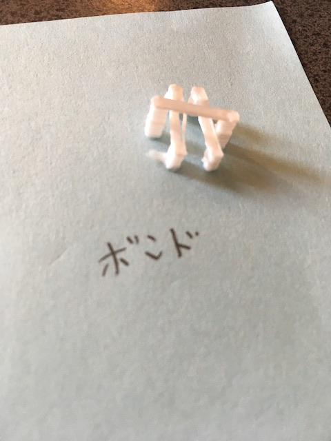
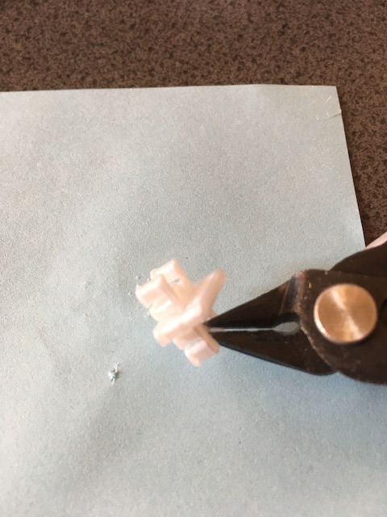
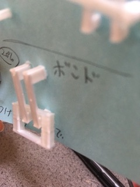
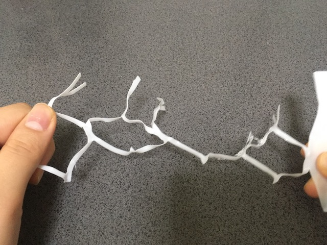
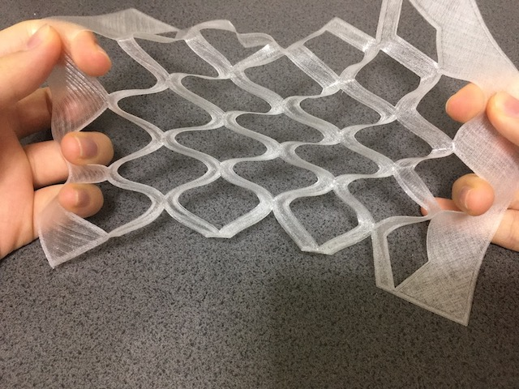
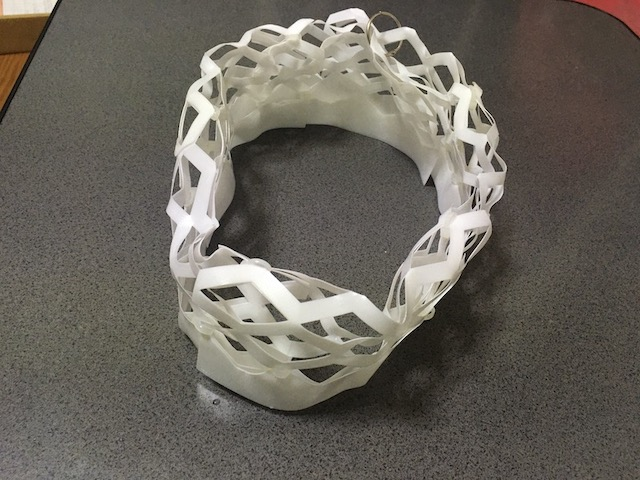
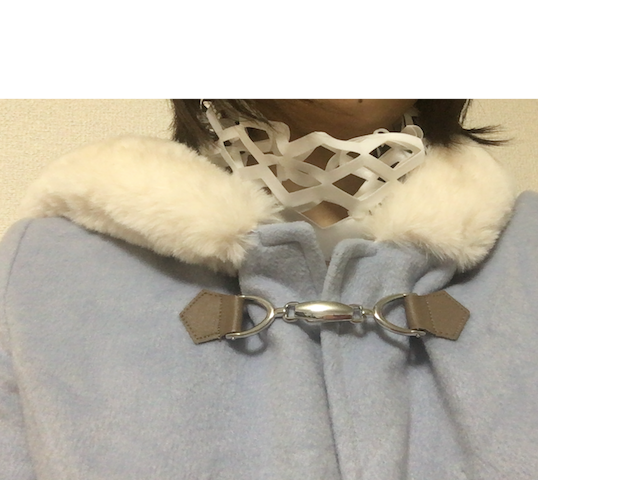
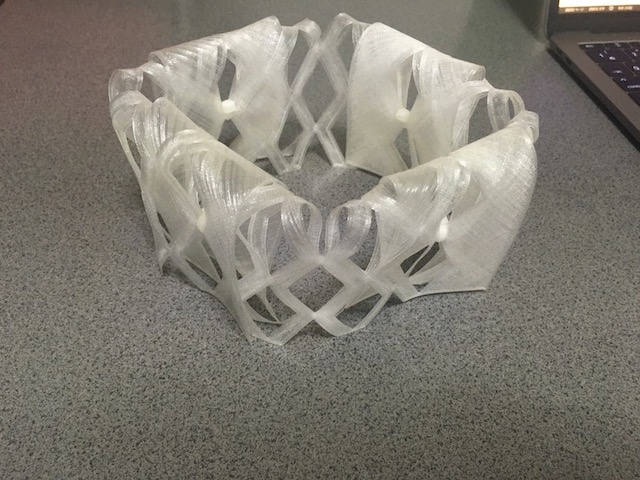
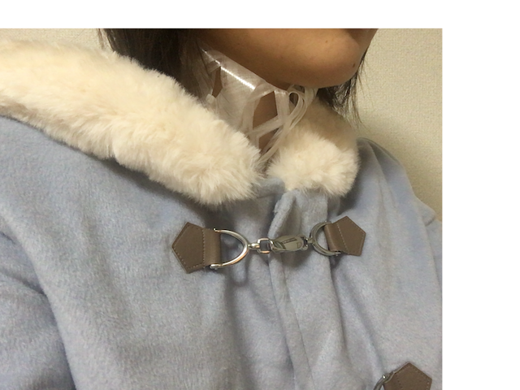

目次

10月
卒論の直し
12000字の目標は9月中に達成していたが、各章がまだ修正可能だったので直した。
また新たに４章と５章を書き上げた
実験１
アイロンの温度に耐えうる服なら３Dプリンターで直接印刷しても問題ないという推測を立てた。
実際は紙ですら剥がれてしまうので今回は断念。
パーツのみで作る服にも挑戦をしたい。
その実験結果のパーツは…データダウンロード



ボンドではれば綺麗になるけど、手作業調整になるので今回は却下。
直接紙に印刷してもくっつかなかった。
機械トラブル
プリントを押すとフリーズしてしまう問題
印刷画面でフリーズした。
日本語のファイル名が入ると固まってしまうのでゴミ箱に捨ててあるファイルまで捨てれば直る。
カードが悪いのではなく入っているファイルに問題があっただけ。
以上（2020/10/22）
実験２
服パーツ Fusion版データ
服パーツ STL版データ(同上)
過去作品
・ ３Dプリンターでバック
・ 木を曲ゲル技術を使った作品
使用ソフト・機材・道具
(ア) 機材
・Anycubic Mega-S
(イ) ソフト
・Fusion360
・Ultimaker Cura
(ウ) フィラメント
・TPU フィラメント(熱可塑性ポリウレタンフィラメント)
・TRF フィラメント (感温フィラメント)
(エ) 道具
・お湯
・ニッパ
・結束バンド
設計と試作
今回使用する設定と柔軟性の質感を実感するため、厚さの違う試作を出力した。

1つ
のレイヤーの厚さが 0.2mm の設定のため、レイヤー1層分の 0.2mm、レイヤー2層
分の 0.5mm、レイヤー4層分の 1.0mm で行った。
サンプルの参考は図の通り。
レイヤー1層分の 0.2mm はほつれやすかった。TPU の場合は薄いレ ース素材と同じ手触り、TRF の場合はちょっと硬い折り紙と同じ肌触りだった。折る と完全に折り目がつく。
レイヤー2層分の 0.5mm はほつれず、安定した試作ができ た。肌触りはレイヤー1層分 0.2mm とほとんど変わらなかった。
レイヤー4層分の 1.0mm は厚みが出た。TPU の場合は厚い布に近い肌触りがあった。TRF の場合は手 で曲げ伸ばしを行うことは困難で硬かった。お湯で温めれば変形可能であるが、硬化し た状態では肌触りは硬い傾向がある。
上記の結果を考慮して、パーツの製作を行なった。大きさは縦 16mm 横 16mm 厚さ 0.5mm である。工夫した点は3つある。1つ目は厚さが 0.5mm にしたこ とである。上記の施策の実験から、0.5mm がほつれにくく、安定した出力が可能な 上、布に近い柔軟性を持っているので採用した。2つ目は出力面積を減らすために穴が ある設計を行なったことである。そうすることにより、出力時間が短縮可能になるから である。作品のパーツが細すぎる場合も出力が失敗しやすいので、ある程度、太さを保 つことは必要である。3つ目は出力スピードのパラメータ調整を行なった。1パーツに 時間がかかりすぎると、人が着るような、大きな製作物を作る際、制限になることが多 い。
印刷目安のパラメーター

ひぱったときの力分散の考慮の重要性


TRFでネックウォーマー(パーツ６個)


完成図と着用イメージ
設計図

TPUでネックウォーマー（パーツ４個)


完成図と着用イメージ
設計図

以上（2020/12/22）